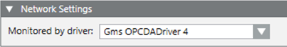

Configuring Third-party OPC Client Connectivity
You can configure third-party OPC client connectivity in Desigo CC by creating the OPC driver and OPC network, then associating the driver to the network and starting the OPC driver, and finally importing data. For background information, see the reference section.
- System Manager is in Engineering mode.
- System Browser is in Management View.
- Depending on where the driver will run, select one of the following:
- Project > Management System > Servers > Main Server > Drivers
- Project > Management System > FEPs > [FEP station] > [drivers folder]
NOTE: If the drivers folder is not available, to create it select the FEP station and click New .
. - In the Object Configurator tab, click New and select New OPC Client Driver.
- In the New object dialog box, enter a description and click OK.
- The newly created OPC driver is added to System Browser, but not started.

- Create the network:
a. Select Project > Field Networks.
b. In the Object Configurator tab, click New and select New OPC Network.
c. In the New Object dialog box, enter a name and description, and click OK. - The newly created OPC network is added to System Browser.
- Associate the driver to the network:
a. Select Project > Field Networks > [OPC network].
b. In the OPC tab, open the Network Settings expander.
c. From the Monitored by driver drop-down list, select the driver.
d. Click Save .
. 
- The status of a newly created driver is
Stopped. To be able to connect to the field the driver must be started with either Start or Start Conf… - Select Project > Management System > Servers > Main Server > Drivers > [OPC driver].
- In the Extended Operation tab, click Start.
NOTE: Only for configuration purposes, you can also click Start Conf. to activate the driver without establishing any real connection to the field. 
- Import the configuration. See Importing Third-party OPC Server Data.
- If the OPC driver was running in
Configuration Modefor engineering tasks, stop and restart it in full mode for normal operation. See Starting or Stopping the OPC Driver.